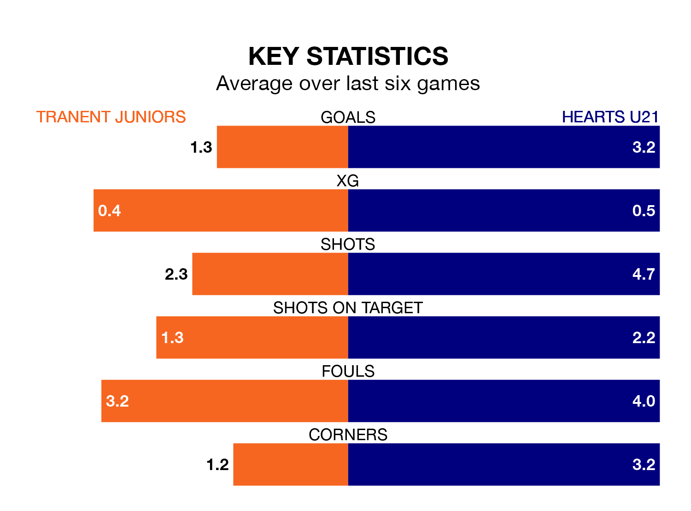

Tranent Juniors host Hearts U21 in Saturday's match at Foresters Park looking to bounce back from defeat last time out in the Lowland Football League.
The Belters, who sit third in the league after 23 games, fell to a 3-2 away defeat to East Kilbride on Tuesday.
They face a Hearts U21 side who also lost their last match, a 2-1 defeat to Edusport Academy, and who sit fourth in the table.
With 69 goals in 25 games so far this season, Hearts U21 are the league's second-highest scorers with 2.8 goals per game. And they are conceding fewer than average, letting in 32 goals at a rate of 1.3 per game.
Tranent Juniors are also above average scorers, with 2.3 goals per game, compared to a league average of 1.7. They have conceded 1.0 goal per game.
The Belters are in mixed form in the Lowland Football League, with two wins and a draw from their last six games.
With two wins and four losses over that period, Hearts's form is slightly worse – they have taken six points from 18, compared to the home side's seven.
In the last three years, Tranent Juniors and Hearts U21 have played each other on three occasions. Tranent Juniors won two of them and Hearts U21 one.
Their last meeting was on August 22, when Hearts U21 won 3-0 at home.
Updated: 12:06 (UTC), 15/02/24